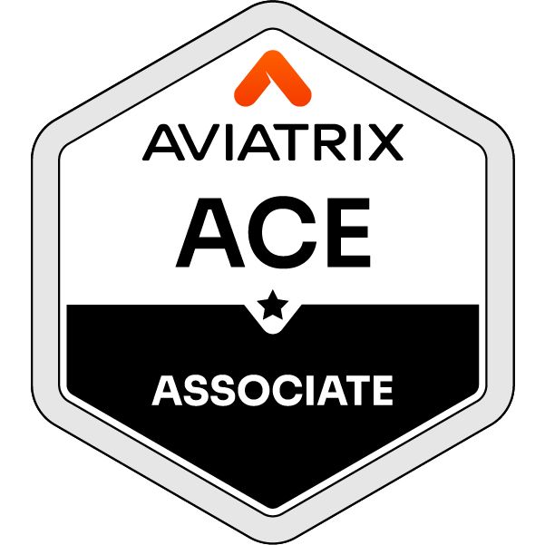
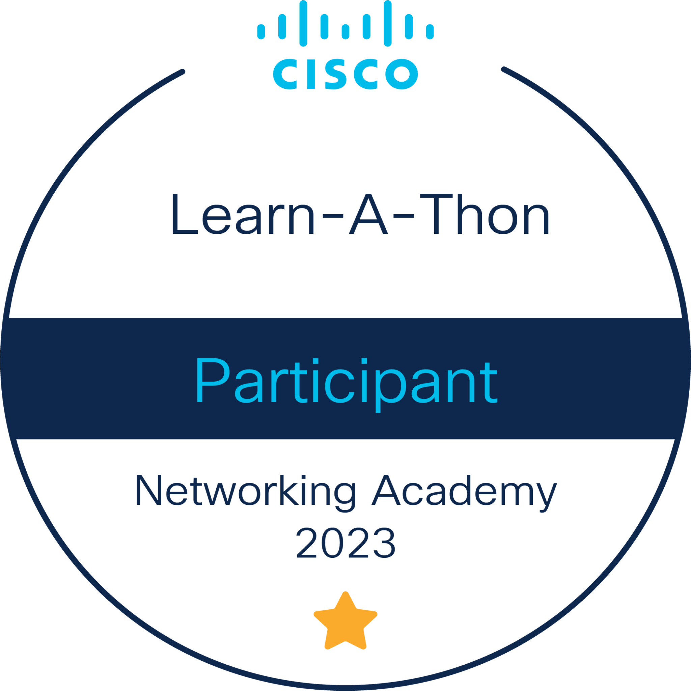

Hi, I'm Chamindu Attanayaka
I am a |
DevOps Engineer experienced in AWS, Kubernetes, CI/CD, and cloud-native infrastructure, with expertise in Jenkins, Terraform, Prometheus, and Grafana. Focused on automation, scalability, reliability, and secure delivery while driving DevOps best practices across teams. Currently expanding into blockchain, DeFi, and Web3 infrastructure to bridge cloud-native engineering with decentralized platforms.
chamindu@cloud:~$ init-session --profile ChaminduAttanayaka
✦ Chamindu Attanayaka | DevOps Engineer & Platform Architect
✓ AWS Solutions Architect Pro • Kubernetes & Observability Specialist
✓ Infrastructure: AWS Multi-VPC, Amazon EKS Fargate/Nodes, Azure AKS, Terraform IaC
✓ Open-Source: 9 Production Repositories Synced (CI/CD, Monitoring, K8s HPA/PDB)
✓ Credentials: 12+ Verified Credly Badges (AWS SAP/SAA/SOA, AZ-104, Terraform, CCNA)
💡 Tip: Type help or click the buttons below to explore.
chamindu@cloud:~$
Architecting Multi-Cloud Resiliency
Delivering enterprise reliability, automated infrastructure pipelines, and developer enablement.
Declarative, Secure & Self-Healing Platforms
I bridge modern software engineering and multi-cloud infrastructure operations. With over 5 years of hands-on experience, I design declarative, immutable, and fully observable cloud environments.
Whether provisioning production-grade Terraform IaC modules across AWS and Azure, managing container fleets on Amazon EKS & Azure AKS, or automating zero-trust CI/CD delivery pipelines, my focus is rooted in high security standards and 99.99% availability.
Modular Infrastructure as Code
Reusable Terraform and CloudFormation modules with remote state locking, security policy enforcement, and compliance scanning.
Kubernetes & Cloud Containers
Amazon EKS & Azure AKS lifecycle management, custom Helm charts, ingress controllers, service meshes, and RBAC hardening.
Full-Stack Observability & SRE
Distributed Prometheus metrics, Grafana dashboards, ELK log aggregation, SLI/SLO tracking, and proactive incident alerts.
AWS • Azure • Terraform
Multi-VPC, EKS, Lambda, S3, RDS, EFS • Azure AKS • Modular IaC
Kubernetes • Docker • Helm
EKS & AKS fleets • HPA & PDB autoscaling • Fargate serverless
Jenkins • Git • Python
Declarative CI/CD • Lambda Boto3 automation • ECR release pipelines
Prometheus • Grafana • Elastic
Alertmanager • Kibana logs • CloudWatch & Node Exporter • SRE alerts
WSO2 • NGINX • Nexus
API gateway & micro-integration • NGINX proxy • artifact management
Cisco • VMware • Linux
Cisco switches & ASA • VMware ESXi/vCenter • OpManager & Cacti
Featured Repositories & Blueprints
Real-world infrastructure codebases, automation scripts, and deployment configurations.
jmeter-aws-load-testing-platform
Automated API performance testing platform using JMeter, Terraform, Jenkins, Docker, EC2, SSM, S3 and ECR for distributed multi-region stress tests.
Observability-on-AWS-EKS-Fargate
Prometheus and Grafana observability stack for AWS EKS Fargate with Helm, Jenkins, EFS persistence, and reusable alerting configuration.
observability-azure-node
Prometheus and Grafana observability stack for Azure AKS worker nodes with Helm, Jenkins, persistent storage, and reusable alerting rules.
grafana-backup-restore-toolkit
Bash toolkit for safely backing up and restoring Grafana dashboards, folders, datasources, alerting configuration, and users via the Grafana HTTP API.
jenkins-kubernetes-hpa-manager
Production-ready Jenkins pipeline for automated Kubernetes HPA management with CPU and memory-based autoscaling, deployment discovery, validation, and AWS EKS integration.
jenkins-eks-poddisruptionbudget-manager
Automated Jenkins pipeline for generating and managing Kubernetes PodDisruptionBudgets across Amazon EKS workloads with configurable availability policies and optional AWS IAM role assumption.
jenkins-eks-rollout-restart
Safe Jenkins pipeline for controlled Kubernetes workload restarts on Amazon EKS with dry-run mode, approval gates, and automated rollout verification.
jenkins-ecr-docker-image-builder
Reusable Jenkins CI/CD pipeline for building Docker images and publishing versioned releases to Amazon ECR, with secure credential handling and configurable build parameters.
nexus-repository-mirror
Bash-based Nexus Repository mirroring tool for securely transferring artifacts between Sonatype Nexus repositories with pagination, retries, logging, failure tracking, and environment-based credential management.
Verified Professional Certifications
Officially certified and verified by AWS, HashiCorp, Aviatrix, Google, and Cisco.

AWS Certified Solutions Architect – Professional
Advanced multi-tier cloud architectures, high availability, disaster recovery, security governance, and multi-account organization design.

AWS Certified Solutions Architect – Associate
Compute, storage, database, networking, and security best practices aligned with the AWS Well-Architected Framework.

AWS Certified SysOps Administrator – Associate
Deploying, managing, and operating scalable systems, automated health checks, metric alarms, and backup remediation.

HashiCorp Certified: Terraform Associate (003)
Infrastructure as Code (IaC) principles, state management, module creation, resource provisioning, and Terraform Cloud workflows.

Multicloud Network Associate
Enterprise multi-cloud networking architecture across AWS, Azure, GCP, and OCI with Transit firewalls and encryption.

Google IT Support Professional Certificate
System administration, networking fundamentals, operating system troubleshooting, and cybersecurity essentials.

CCNA: Introduction to Networks
IP addressing (IPv4/IPv6), subnetting, OSI model, Ethernet switching, routing protocols, and network media standards.

AWS Academy Graduate – Cloud Foundations
Core cloud computing concepts, AWS global infrastructure, core cloud services, compliance, and billing models.

Networking Academy Learn-A-Thon 2023
Earned through intensive technology mastery and participation in the Cisco Networking Academy Learn-A-Thon.

Introduction to Packet Tracer
Network simulation, topology design, device configuration, packet inspection, and troubleshooting using Cisco Packet Tracer.
Introduction to IoT
Internet of Things architecture, digital transformation, connected device ecosystems, sensors, automation, and analytics.

Introduction to Cybersecurity
Cyber threat landscapes, security best practices, vulnerability detection, privacy, confidentiality, and defense strategies.
Explore Full Credly Transcript (12 Verified Badges)
Direct credential verification on Credly for all issued AWS, HashiCorp, Aviatrix, Cisco, and Google certifications.
Ready to Build Scalable Cloud Systems Together?
Whether you are hiring for a Senior DevOps, Platform Architect, or Cloud Infrastructure role, let's connect.